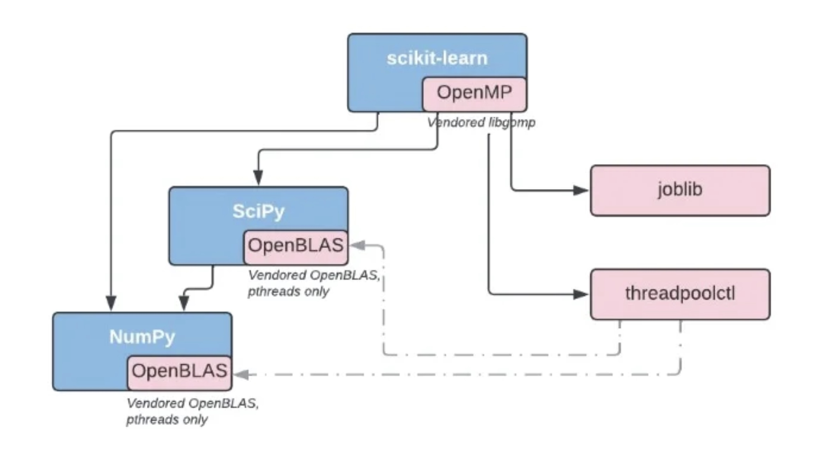
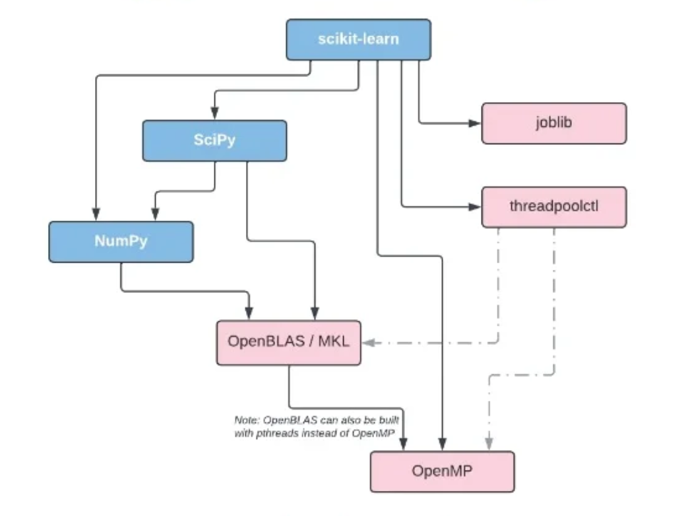

Parallelism in Numerical Python Libraries
Welcome to the Design Document for CPU parallelism in NumPy, SciPy, scikit-learn, and pandas. Each library has varying levels of support for running parallel computation. This document details the current status of parallelism with shipping code on PyPI and possible paths for improvement.
Current Landscape
Each library ships with an assortment of parallel interfaces on PyPi:
- NumPy’s
linalgmodule and matrix multiplication utilize BLAS, which is multi-threaded by default for most implementations. On PyPI, NumPy ships with OpenBLAS built with pthreads. - SciPy’s
linalgmodule uses OpenBLAS, which is also multi-threaded by default and built with pthreads. SciPy also has aworkersparameter that configures multiprocessing, multithreading, or pthreads. - By default, most computation in Pandas runs in serial. The only parallel mechanism is enabled through Numba by setting passing
parallel=Trueto engine_kwargs. - Scikit-learn uses the
linalgmodule from NumPy and SciPy, which is multi-threaded by default. Scikit-learn ships with OpenMP on PyPi and runs OpenMP accelerated code in parallel by default. The library also has an_jobsparameter that uses Python’s multithreading or loky, an improved Python-based Process Pool Executor via joblib.
On PyPi, if a library requires OpenMP or OpenBLAS, it bundles the shared library into its wheel:

Issues with the Current Landscape
The current landscape has three broad categories of issues:
- APIs for controlling parallelism are not consistent between libraries.
- By default, BLAS and scikit-learn’s OpenMP are multi-threaded and can lead to unexpected problems.
- Interactions between different forms of parallelism may lead to slowdowns, crashes, or oversubscription.
APIs for Configuring Parallelism
There are three ways to configure parallelism across the libraries: environment variables, threadpoolctl, or library-specific Python API.
Examples of environment variables consist of:
OPENBLAS_NUM_THREADSfor OpenBLASMKL_NUM_THREADSfor MKLOMP_NUM_THREADSfor OpenMP
These environment variables control how many threads a specific backend uses. These environment variables do not influence code that does not use a particular backend, like OpenMP. For example, SciPy’s fft module uses pthreads directly.
Threadpoolctl provides a Python interface for configuring the number of threads in OpenBLAS, MKL, and OpenMP. Linear algebra function calls from NumPy, SciPy, or scikit-learn can all be configured with threadpoolctl or an environment variable. These configuration options also control Scikit-learn’s OpenMP routines.
SciPy and scikit-learn have a library-specific Python API for controlling parallelism. SciPy’s workers can mean multithreading, multiprocessing, or pthreads. Scikit-learn’s n_jobs is either multiprocessing or multithreading. Note that scikit-learn’s n_jobs does not configure OpenMP or OpenBLAS parallelism.
Proposal
Here is a two step proposal:
- Document the functions or methods using OpenMP or BLAS and can be configured with an environment variable or threadpoolctl.
- Adopt a consistent Python API for configuring parallelism. We use SciPy’s
workersparameter because it is more consistent in controlling the number of cores used.workersdenotes any form of parallelism such as: multi-threading, multiprocessing, OpenMP threads, or pthreads. Please see the FAQ section for more information.
Multi-threaded by Default
BLAS implementations such as OpenBLAS are multi-threaded by default. Scikit-learn followed this convention with OpenMP, which is also multi-threaded by default. Using all the CPU cores by default is convenient for interactive use cases like in a Jupyter Notebook. The downside of using all CPU cores is during deployment to shared environments. The user needs to know which API to configure their program to become serial from the above section.
There can be oversubscription when multiprocessing or multi-thraeding is used together with OpenBLAS or OpenMP. Distributed Python libraries such as Dask and Ray recommend setting environment variables to configure OpenBLAS and OpenMP to run serially.
Proposal
Here are some possible paths we can take:
- Keep the status quo where BLAS is multi-threaded by default. SciPy’s
linalgmodule or scikit-learn’s OpenMP accelerated routines will continue to be parallel as the default. - Libraries all have a serial fallback and we only ship the serial form on PyPi. We encourage OpenMP anywhere the whole stack is built in in a consistent fashion.
- Migrate from multi-threaded to single-thread as the default. Each library has the option to include a global flag that configures all computations to be parallel.
Options 2 and 3 helps with oversubscription because the library is serial by default.
Interactions Between Different Forms of Parallelism
When different parallelism interfaces are running concurrently, it is possible to run into crashes or oversubscription. The following is a list of known issues:
libgomp(GCC’s OpenMP runtime library) is notfork(1)-safe whilelibomp(LLVM’s OpenMP runtime library) isfork(1)-safe. Scikit-learn’s community developed loky as a workaround. There is a patch to GCC OpenMP to make itfork(1)safe, but it has not progressed. For details, see scikit-learn’s FAQ entry.libomp(LLVM’s OpenMP runtime library) not compatible with libiomp (OpenMP for Intel Complier). The workaround is to setMKL_THREADING_LAYER=GNU. See this link for details.libgomp(GCC’s OpenMP runtime library) is also not compatible with libiomp (OpenMP for Intel Complier): pytorch#37377- There are performance issues when OpenBLAS (built with pthreads) and OpenMP have separate thread pools: OpenBLAS#3187. For this issue, OpenBLAS and OpenMP routines are called sequentially and not nested. A workaround is to share the same thread pool by building OpenBLAS with OpenMP.
- There are performance issues when two OpenBLAS are present. For example, when NumPy and SciPy are both installed via PyPI: scipy#15129. The current workaround is to set
OPENBLAS_THREAD_TIMEOUT=1on the affected platforms.
Proposal
The following are feasible steps we can take to improve the issues listed above:
- The library sends a warning or error to notify the user when a known issue is detected. For example, Numba detects when libgomp and
fork(1)are used together, raising an error. - The library detects and raises a warning recommending
MKL_THREADING_LAYERwhen LLVM OpenMP and Intel OpenMP are loaded together. For example, threadpoolctl has such a warning. - Move towards a single OpenMP and OpenBLAS on PyPI by shipping an OpenMP and OpenBLAS wheel. NumPy, SciPy, and Scikit-learn will link to those libraries during runtime. Please see the FAQ section for more information.
FAQ
How to ship OpenMP and OpenBLAS on PyPI?
OpenMP and OpenBLAS are shipped with their header files. When building an upstream library such as NumPy, extensions will use RPATH to link to the OpenMP and OpenBLAS wheels. auditwheel repair needs a patch so that it does not copy PyPi libraries into the wheel: auditwheel#392. Note that PEP513 explicitly allows for shared libraries to be distributed as separate packages on PyPI.
Which compiler implementation to use for OpenMP?
There are two options: libgomp (GCC’s OpenMP runtime library) or libomp (LLVM’s OpenMP runtime library).
libgompis notfork(1)safe, but uses the GCC and shipped with all Linux distros. We advocate for the patch in GCC to make itfork(1)safe.libompisfork(1)safe, but it is an implementation detail and not part of the OpenMP specification.
On PyPI, I propose we go with libomp, because it has the same symbols as libgomp and is fork(1) safe. Upstream libraries such as NumPy or SciPy can still use GCC as their compiler. Package managers can still ship libraries linked with libgomp. SciPy has an existing discussion regarding OpenMP adoption and the compiler choice: scipy#10239.
With a OpenMP wheel, can workers configure and use another threading API like pthreads?
Yes, this design documentation does not restrict the usage of other API for parallelism. The only requirement is to link the library to the OpenMP wheel if it uses OpenMP. This way, all libraries can share the same OpenMP thread pool.
Can the multiprocessing and multithreading modules still be used?
Yes, this design documentation does not restrict the usage of other APIs for parallelism. If Python’s multithreading or multiprocessing fits your library’s use case, you are welcome to use them.
What to do with nested parallel calls?
Libraries will do their best to account for over-subscription from nested parallelism. For example, if multiple OpenMP threads call a BLAS routine, then the BLAS routine is configured to run serially. On the other hand, a library can have an API to perform multiprocessing on a user-defined function. If the user-defined function is also parallelized, then there is nested parallelism. The best a library can do is to document how its parallelism interacts with user-defined functions.
How does conda-forge work?
On conda-forge, if a library requires OpenMP or an implementation of BLAS (such as MKL or OpenBLAS), it depends on the package manager distributing the shared library:

For BLAS, conda-forge builds with netlib. During installation time, BLAS can be switched to other implementations such as MKL, BLIS, OpenBLAS. See this link for details.
For OpenMP, conda-forge builds with libgomp, the GNU build of OpenMP. During installation time, OpenMP can be switched to libomp, the LLVM build of OpenMP. Recall that the LLVM implementation is fork(1)-safe. Note, that the GNU implementation has target offloading symbols, while LLVM does not. See this link for details.
Conda-forge has a mutex package ensuring that a single OpenMP or BLAS library is installed and loaded.